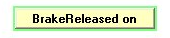

An example is shown in the next figure. Notice the disc brake and the hydraulic actuated brake (red).
|
|
|
The disc brake stops the DriveTrain dissipating energy by friction, like in similar brakes in cars. Its capacity is limited, so it is used mainly as "parking brake" That happens when the caliper attached to the head of a hydraulic piston touch the disc.
This part of the synoptic presents the main components of the hydraulic circuit that forces the pads attached to the piston and the caliper against the dissipating disc.
The DriveTrain synoptic contains a schematic view of the whole braking system, where the position of the braking disc and the pads are positioned in such a way that the actual operations can be appreciated with detail.
It consists of an hydraulic circuit comprised of a reservoir for the oil, a pump, a spring loaded cylinder and a valve. When the valve is closed and the pump starts moving, the pressure in the cylinder starts growing, so its shaft move the attached caliper away from the braking disc, thus releasing the brake and the whole DriveTrain as consequence.
This design follows the "fail-safe" principle: if everything fails the system is kept in a safe situation: the braking disc is blocked.
To liberate the brake disc the conditions are:
•The oil level in the tank must be high enough.
•The valve must be closed.
•The pump should be working for some time, so that the pressure in the spring cylinder is higher than a given value, signaled in yellow in the circular widget for pressure. For security reasons, while in production, the pressure in the hydraulic circuit is kept above this "brake liberation limit".
This subsystem is not autonomous, it is controlled directly by the WindTurbine's Controller. This is because the braking system is part of the Security mechanism of the whole Wind Turbine. This braking system is used in extreme situations to prevent the rotation speed of the Blades to run away, so it must be always under the supervision and control of this Controller. It is also used during the maintenance works of the Wind Turbine, in order to fix the position of the whole DriveTrain, much like the parking brake in a car.
In order to keep the brake disc away from the caliper the WindTurbine's Controller receive only a digital signal from the whole hydraulic system: the output signal of a pressure switch that monitors the value of the oil pressure in it. This approach minimizes the instrumentation required and therefore increase the reliability of the whole system.
The algorithm used to keep this pressure under control involves the concepts of nominal pressure and hysteresis of the pressure switch. When the pressure switch output is "On" the Controller assumes the hydraulic pressure is high enough to keep the brake disc away from the caliper and it stops the pump. When this output is "Off" the Controller assumes the pressure is not enough and turns "On" the pump. There is a difference between the pressure values for the two states of the pressure switch, a characteristic named "hysteresis" and that implies that when the output signal is "Off" (pressure below nominal) and is moving upwards, the pressure switch needs a pressure a little bit higher to change its output to "On" than the pressure at which it turns its output to "Off" when initially is "On".
Using these characteristics the Controller commands the powering of the pump in the hydraulic circuit and produce generate
The hysteresis value and the actual leakage in the hydraulic circuit define the period of the pumping on/off cycle and its duty cycle

When the pump is running and the valve is closed, then the pressure grows at rapid pace. When the pump is turned off and the with valve still closed, then the pressure declines at a slower pace. Each of these speeds has its associated parameter: with them we can simulate real problems, such as pump with low pumping capacity, problems excessive pressure leakage in the total circuit, etc.
When the Controller decide to use the brake for an emergency stop, then it opens the valve, so the pressure drops below the yellow mark in the widget and the brake is on.
